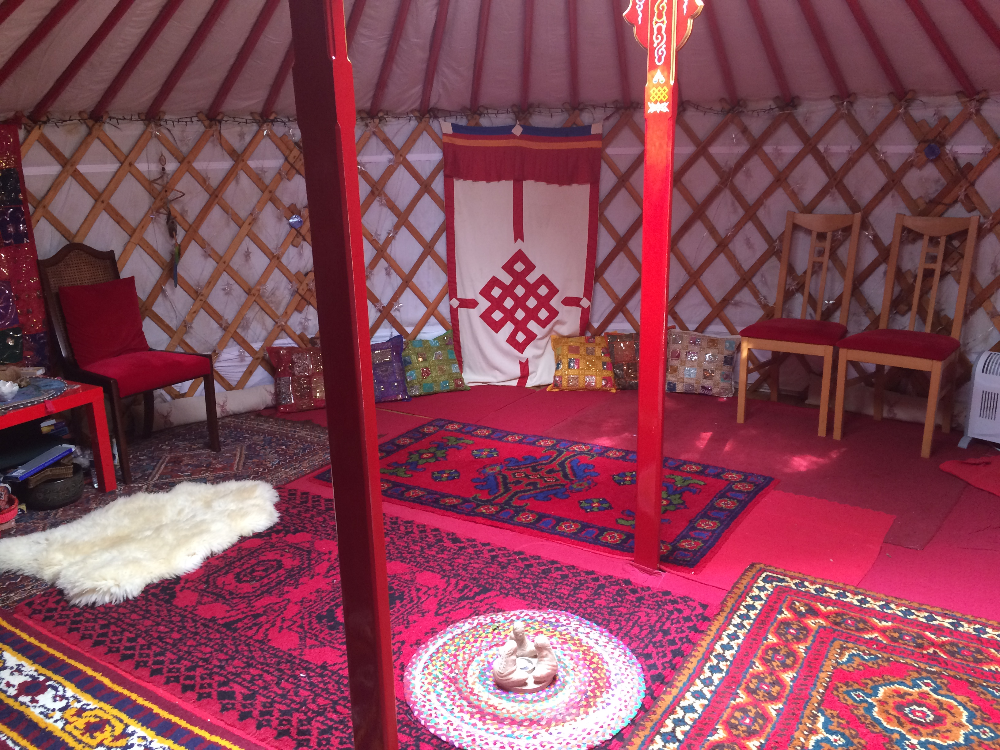
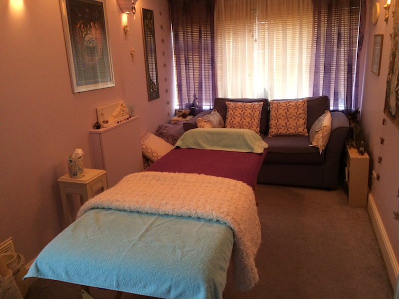

Reflexology, Crystal Healing, Access Bars, CPD Courses for Reflexologists and Animal Communication.
Val Winchester began her training in 1996 at the Maureen Burgess School of Reflexology at Roehampton where she also qualified in Advanced Reflexology. Her interest in this therapy was sparked when some family members had become ill and she had watched a nurse perform some massage techniques which were helping tremendously.
Val then went on to study at the International College of Crystal Healing where she qualified as a Crystal Therapist and learned meditation. Val has run Meditation Groups and workshops for many years which she enjoys immensely.
As Val continued to see clients, she realised there was a further need in people as many of her clients were going through stressful times and indeed trauma. This led to her taking a Diploma in Spiritual Counselling and a Diploma in Hypnotherapy at the Holistic Healing College in London and the London College of Hypnotherapy. Val also trained in Ireland with Doreen Virtue as an Angel Therapy Practitioner and gives Angel Card Readings regularly.
In March 2016 Val renewed her qualification in Reflexology for Fertility and now offers Pregnancy Reflexology to offer the full complement of Reflexology treatments in pregnancy and post-partum.
Val qualified as an Access Consciousness Bars Practitioner in July 2015 and then in January 2016 she qualified as an Access Bars Facilitator which allows Val to teach Bars classes. She has also completed the Access Energetic Facelift, Access Body Processes and the Access Foundation course as well which has given her more tools to work with during the Access Bars treatment.
Val has a love of animals and has trained in Animal Communication and natural horsemanship techniques.
Reflexology is based on the principle that there are reflex points on the feet and hands and that by applying pressure to these points it can:
It is a very relaxing treatment which involves a beautiful massage of the feet combined with pressure being applied to the reflex points in a way that is tailored to each individual.
When the use of crystals is combined with the Reflexology session, the whole treatment is enhanced considerably. Many clients who find it difficult to relax or switch off, have found that they have a much deeper experience when the crystals are used.
Find out more about ReflexologyDuring a session of crystal therapy, crystals may be placed on the body, around the body or under the couch. This is mostly a “hands off” therapy where healing energies are then transmitted through the crystals. This is a very relaxing treatment and balances the energy field of the Client.
Please contact Val if you wish to discuss specific requirements.
Find out more about Crystal TherapyThe Bars are a series of 32 points on the head, which when lightly touched release old energies stuck in the brain and the body, allowing for tremendous and easy change.
The Bars takes all the considerations, thoughts, feelings, emotions, decisions, judgments, and beliefs from any lifetime, that are electrically stored in the brain and releases them. This release occurs when the bars are touched; it allows that stored junk to be released.
Find out more about Access BarsVal also runs CPD (Continued Professional Development) Courses for Reflexologists and Trainee Reflexologists. If you take the one day course, you will be awarded with 12 CPD points.
The CPD Course covers the following topics:
Find out more about CPD or to book a CPD Course, please contact Val.
Val qualified as an ACT2 Animal Communicator with James French in 2009. Since then, she has used it to help many horses, dogs and cats. It can help with behavioural problems, anxiety and illness and pain in the animal's body. It can also help the animal to pass over when the time comes.
Find out more about Animal CommunicationVal runs a regular Meditation Group in the Yurt every other Thursday at 8.00pm-9.30pm.
This is a "drop in" group and all are welcome whether experienced or beginners. During the evenings, Val gives a guided meditation and also a space of stillness and silence for each person to have their own experience.
These evenings are held on the first Monday and Tuesday of each month. The time is 8.00pm-9.30pm. During these evenings, you are invited to lie down. Val uses a special Tibetan bowl to help bring you into the space and relax. Then some gentle music is played and she gives healing to each individual as guided.
Find out more about Meditation, Healing and Relaxation in the YurtSituated at the bottom of the garden, the Yurt is another amazing space in which to receive your treatment. This space is also used for activities such as Meditation Groups, Pilates classes, various courses and Workshops.
This peaceful, nurturing space is situated within the house and offers the perfect environment to rest and relax whilst absorbing the healing energies within the room. Most people comment on how just entering the room makes them feel better.
"Meeting Val Winchester has changed my life. In March 2016, just after I launched my fitness business, I met Val by chance and she offered me the opportunity to hire her yurt for my Pilates classes. That was the start of a magical journey of self-discovery and life changing events - my Pilates classes have grown, Val introduced me to Access Bars Consciousness and facilitated my practitioner course in June 2016 and Val's amazing Mediation and Healing groups has given me inner peace and calmness. I also highly recommend Val's Reflexology treatment, which is not only a wonderful massage it also leaves you having a total body and mind connection."
"Val's presence, healing energy, compassion, love and sense of humour leaves you feeling relaxed and a total sense of being. Thank you Val for being in my life."
"I have known Valerie Winchester for at least 15 years and have found her meditation circles and
other healing practices to be excellent.Valerie is a diligent and caring person in all that she does,
always ready to help any who have questions, experiences etc.,
Valerie is herself highly experienced in this field as I have attended many of her meditation groups
where she has been professional in her conduct, knowing how to assist those with any issues that may
arise and very discreet in her ability to do so.
I have no hesitation in recommending Valerie Winchester to run meditation courses and/or other healing
practices she is so capable of." - D Summer
"I absolutely love Val's meditation groups! She manages to hold a relaxing, open and gentle space for everyone no matter what comes up. I've been attending Val's groups for many years and I swear by them as I always come away feeling clearer and energised." - Eleonora
"I've been going to Val's meditation group for quite some time.
What works for me is the gentleness and caring that I feel. I've been to quite a few other groups
but never felt so looked after. I never want to miss it. She makes sure we are comfortable, the
temperature is right, we have blankets, cushions if our feet don't touch the floor and water to drink.
I like the quiet atmosphere that Val creates. There is some sharing, which is minimal, as the whole
point for me is to sit and be with stillness. But it's good to hear ourselves speak our names and a
brief where we are.
Every time we meet the meditations are different because of where I am and what's going on, So even
if my mind has been having a field day I know my body has been resting. Sometimes I am in such a lovely
peaceful place its a challenge to open my eyes and come back.
Val tunes in usually to see what the group needs and her meditation flows from that. It always seems
more powerful in a group than sitting at home on my own.
Music is often used and can really help soothe and uplift
We pick an Angel card at the beginning which can help focus, sometimes we also pick a crystal to hold.
At the end we often have a message from another card which we share, that's really helpful too hearing
all the card's messages.
Val is very particular about closing down and she introduces it so gently its like having another mini
quiet time. It is something I often forget to do after leaving a group and sometimes when I am out I
remember some of Val's words.
If Val is going to do another meditation group, let me know where!" - M Weatherall
"I have been taking part in Val's Meditation group for over ten years. Every session has a different
theme using soothing music, crystals and / or Angel Cards. She leads us excellently into the
meditations and guides us back, offering possible reasons for our individual experiences and allowing
discussion within the group.
Val ensures we drink plenty of water and is always calm,caring and considerate towards each member of
the group.
I have found an oasis from the hubbub of everyday life and take away a feeling tranquility each time I
visit Val's meditation group . I highly recommend her Meditation Sessions." - Sue Towersey